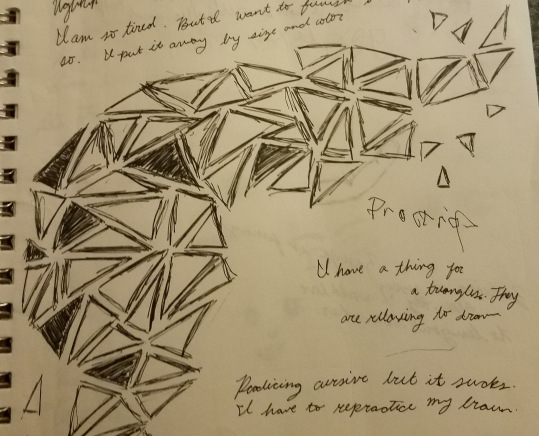
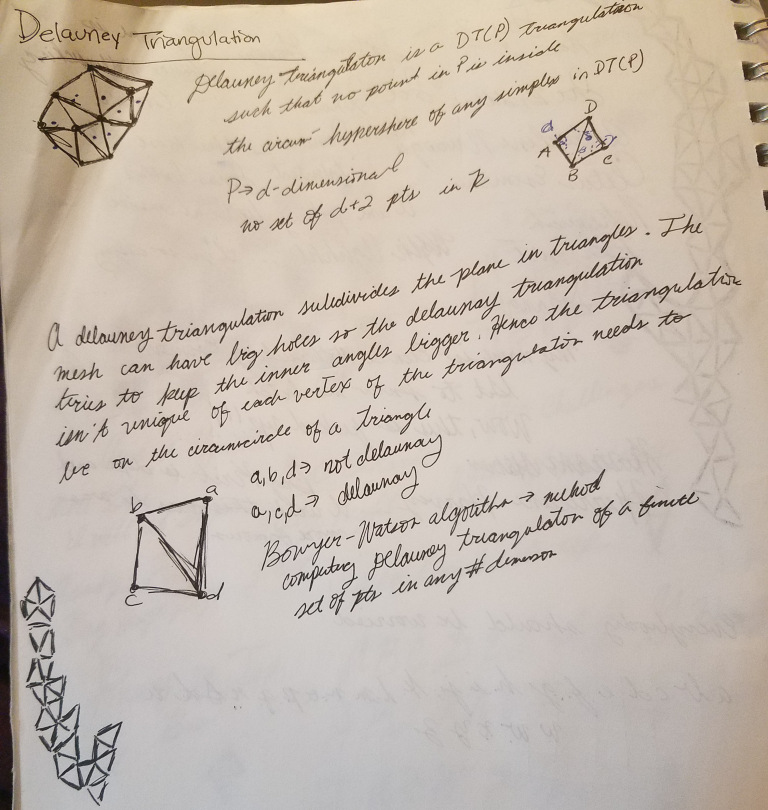

How companies use geolocation data to target you
P5.js sketch inspired by triangle musings and the Delauney Triangulation algorithm.
When I’m idle, I draw visuals in my notebook. Recently, I have been drawing triangles in my notebook and I wanted to practice with p5.js is to recreate my triangle sketches.
I remembered Delaunay Triangulation and felt that the concept fit with my work. Delaunay Triangulation of a vertex set with the property that no vertex in the vertex set falls in the interior of the circumcircle of any triangle in the triangulation.
